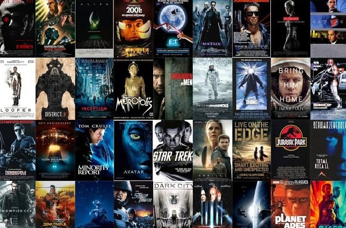
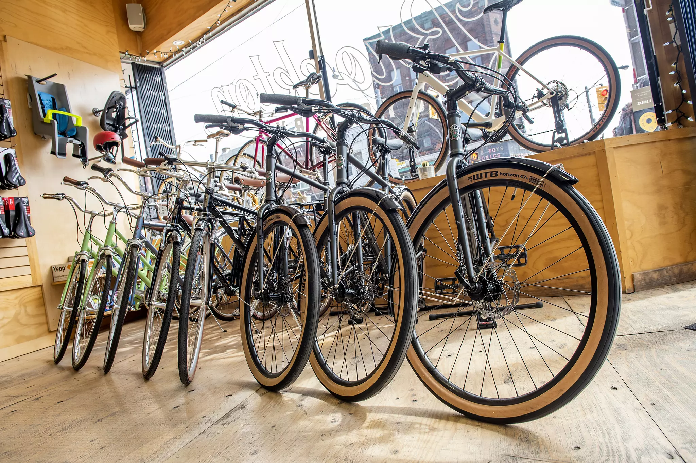

This dashboard joins two data sets.
The first, shows the sourcing projects, total contract value, and contract savings of a procurement department.
The second shows the saving goals at the director level.
In this project we take raw housing data and transform
it in SQL Server to make it more usable for analysis.

In this project we use SQL Server to explore global COVID 19 data.
The data was gathered in a survey of data professionals, looking at their job title, salary, indrustry and more.

In this project we look at what variables effect the gross revenue from movies.

In this project we look at 1000 people , some information about them and whether they have purchased a bike.